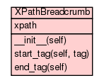

Class XPathBreadcrumb
source code

A class which is used to build XPath-like paths as a DOM tree is
walked. It keeps track of the number of times which it has seen a certain
tag, so that it will correctly create indices for tags.
Initially, the path is empty. Thus >>> xb = XPathBreadcrumb()
>>> xb.xpath ""
Suppose we walk down a DOM node for the tag <foo> and we want to
record this, we simply do >>> xb.start_tag('foo')
Now, the path is no longer empty. Thus >>> xb.xpath
foo[0]
Now suppose there are two <bar> tags under the tag <foo>
(that is
<foo><bar></bar><bar></bar><foo>),
then the breadcrumb will keep track of the number of times it sees
<bar>. Thus
>>> xb.start_tag('bar')
>>> xb.xpath
foo[0]/bar[0]
>>> xb.end_tag()
>>> xb.xpath
foo[0]
>>> xb.start_tag('bar')
>>> xb.xpath
foo[0]/bar[1]
|
|
__init__(self)
x.__init__(...) initializes x; see x.__class__.__doc__ for signature |
source code
|
|
|
|
|
|
|
|
|
|
|
|
Inherited from object:
__delattr__,
__getattribute__,
__hash__,
__new__,
__reduce__,
__reduce_ex__,
__repr__,
__setattr__,
__str__
|
|
|
xpath
|
|
Inherited from object:
__class__
|
|
x.__init__(...) initializes x; see x.__class__.__doc__ for
signature
- Overrides:
object.__init__
- (inherited documentation)
|
- Decorators:
@accepts(Self(), unicode)
|